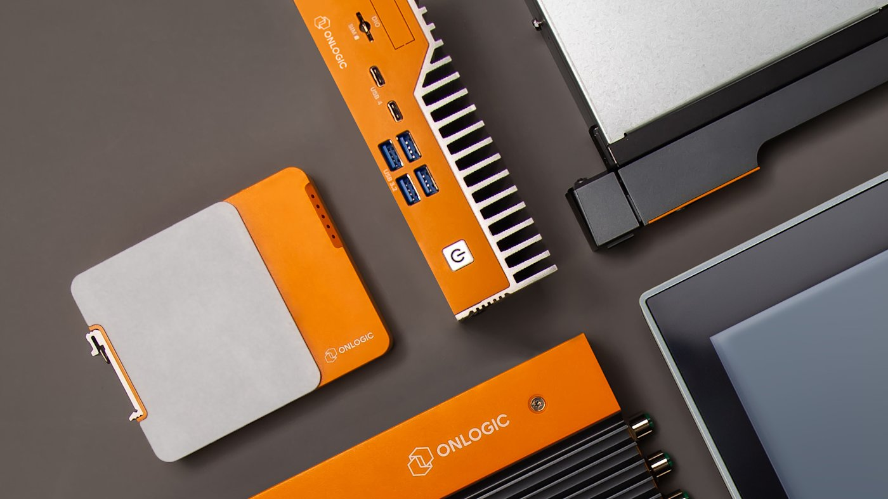

Risk map
Map firmware, BIOS, driver, web store, and support flows against the current risk list together.
Proposal brief for OnLogic
We saw the cybersecurity internship signal at OnLogic. This page maps a small senior Elinext squad to your industrial PC, firmware, and support risk now. Start with one product family.

The cybersecurity role says OnLogic is adding security capacity. That fits a global industrial PC company. Your products span firmware, BIOS, support docs, and edge systems. The hard part is keeping checks close to each release. If this stays thin, senior engineers chase risk instead of shipping.
A dedicated security and QA squad works under your engineering lead.
Map firmware, BIOS, driver, web store, and support flows against the current risk list together.
Build smoke and security checks for release paths that touch drivers, images, updates, and support downloads.
Add CI jobs for static scans, dependency checks, and clear reports your team can act on each week.
Run a pilot on one product family, then hand over test packs, findings, and next steps.
Elinext is a full-cycle software development company since 1997, with about 700 in-house specialists. We use no freelancers or subcontractors. For OnLogic, the fit is secure embedded and infrastructure work: C/C++, .NET, Python, DevOps, and QA. Our ISO 27001 and ISO 9001 work matters when hardware, firmware, and customer systems meet. We can work under your Product Owner or lead a scoped track. The squad above gives your senior team extra hands while security work grows.
Elinext helped build a manufacturing platform that takes data from factory machines and shows useful improvement insights.
Read the case studyElinext ran long-term QA for a complex infrastructure product used to prevent business process issues.
Read the case study